Alicia & Alexandre
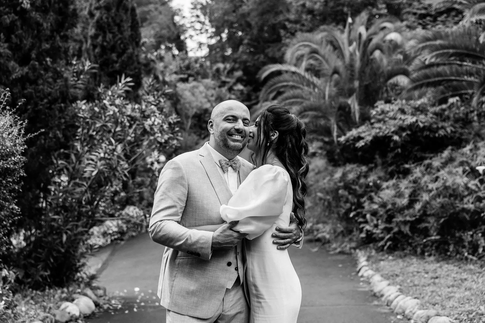
En juin 2025, Alicia et Alexandre ont imaginé un mariage profondément tourné vers la famille et les amis, pensé comme un moment intime, hors du temps. La nature omniprésente, les jeux de lumières, les bougies et les teintes vertes ont créé une atmosphère chaleureuse, cosy et enveloppante, une véritable bulle de bonheur. Leur cérémonie religieuse, à la fois émouvante et très festive, portée par un groupe de gospel, a fait vibrer les cœurs : l’AMOUR était partout. Chaque détail a été minutieusement réfléchi et, avec 23 prestataires à coordonner, cet événement d’une vie a pris tout son sens. Des services de grande qualité, une décoration sublime et des instants de partage intenses ont donné naissance à des souvenirs fous, magiques et inoubliables.
« Magnifique ! Vous souhaitez un effet "Waouh" pour vous et vos invités ?! Ne chercher plus vous êtes au bon endroit. Une étude approfondie de vos goûts est faite en amont pour viser en plein dans le mille. Alexandra s'actualise sur les décorations tendances, recherche les meilleures prestataires pour la mise en place et possède le sens du détail qui fera toute la différence. Nous avons eu une scénographie qui nous ressemble grâce aux nombreuses inspirations qui nous ont été montrées. Un book a été créé, ce qui nous a permis d'être une référence pour discuter avec les fleuristes ou les loueurs de mobilier. Nous recommandons vivement Alexandra où la communication fut fluide pour atteindre nos objectifs en rapport avec notre thème. Merci ! »Alicia & Alexandre
par Anaïs L
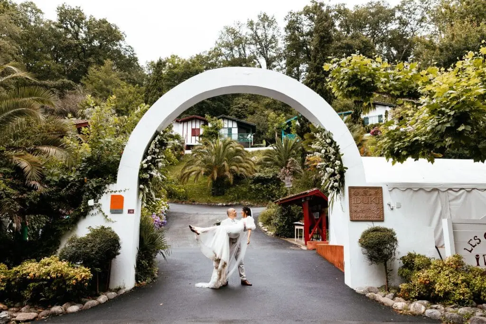
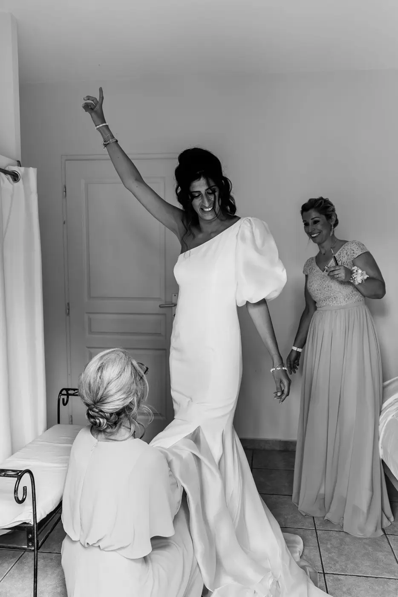


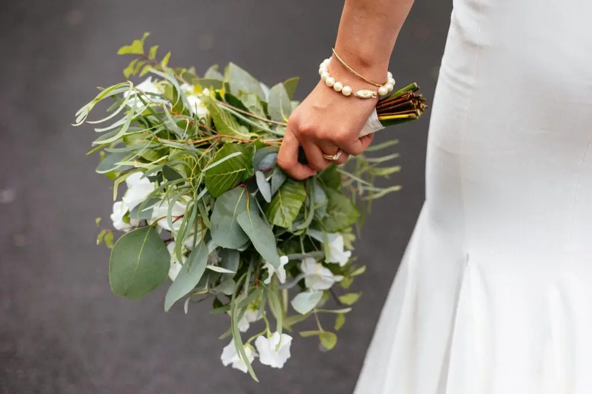
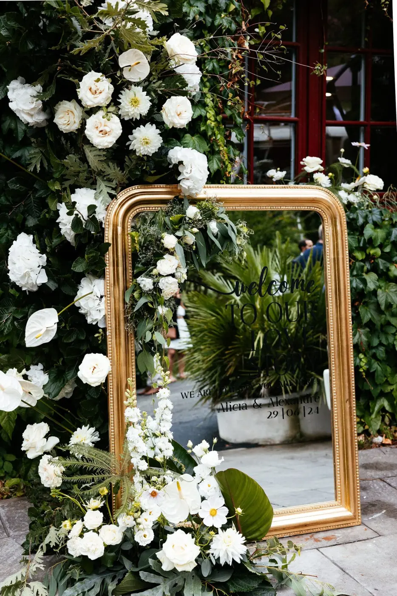


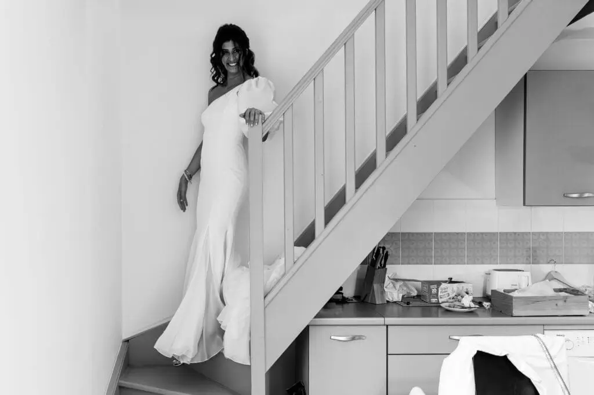
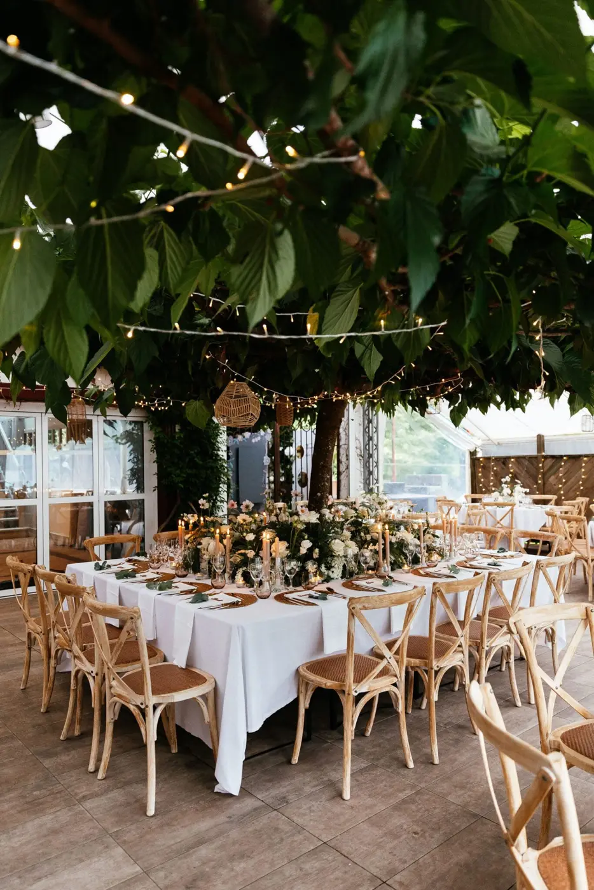

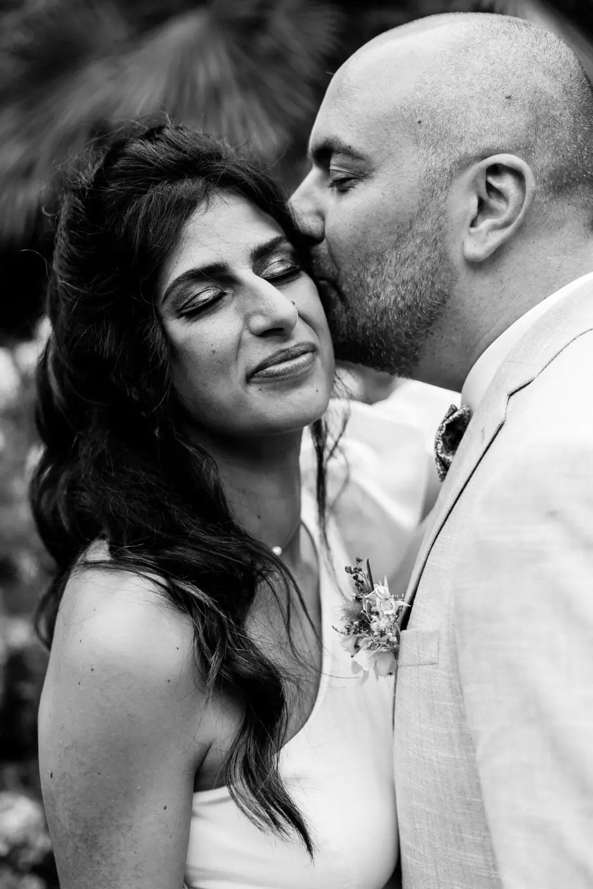
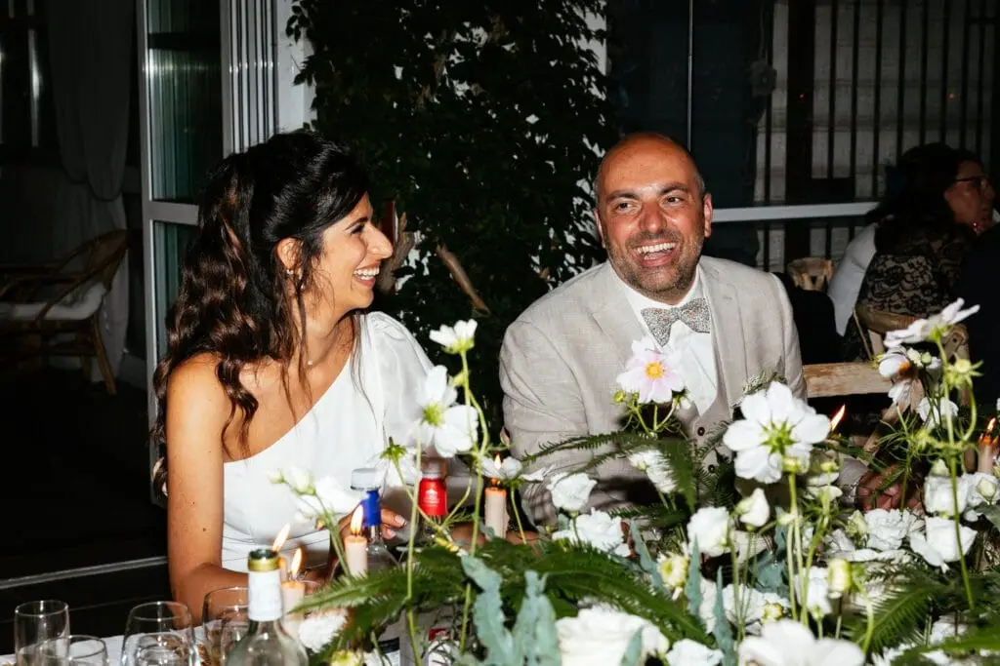


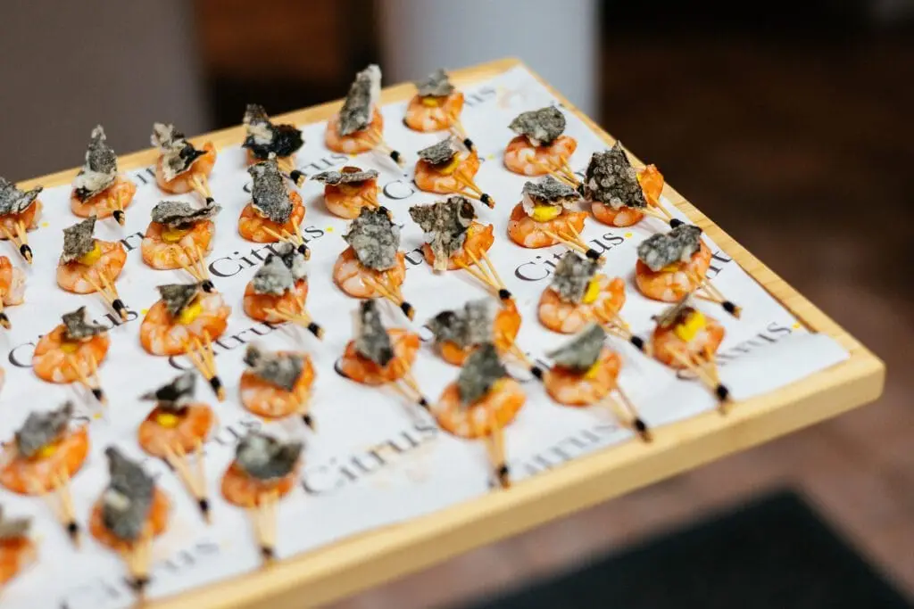


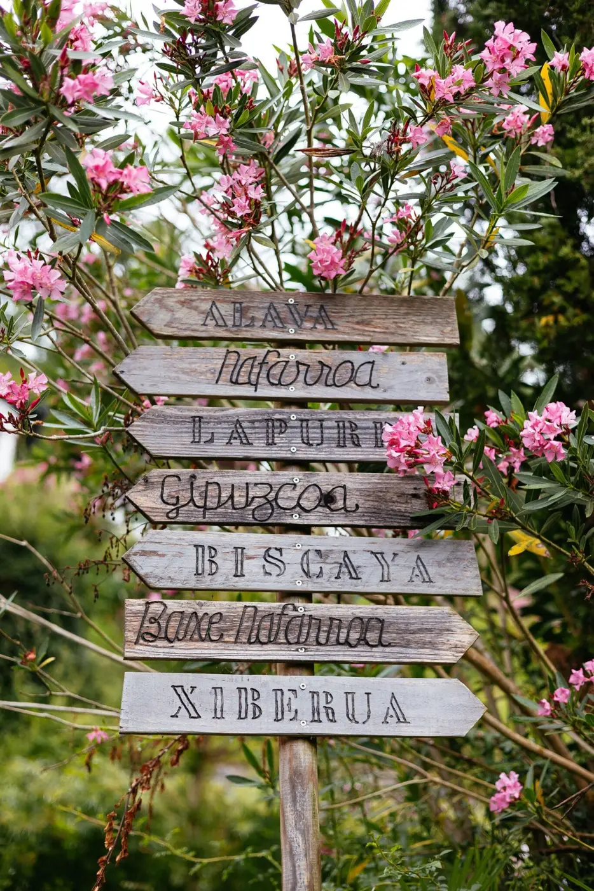
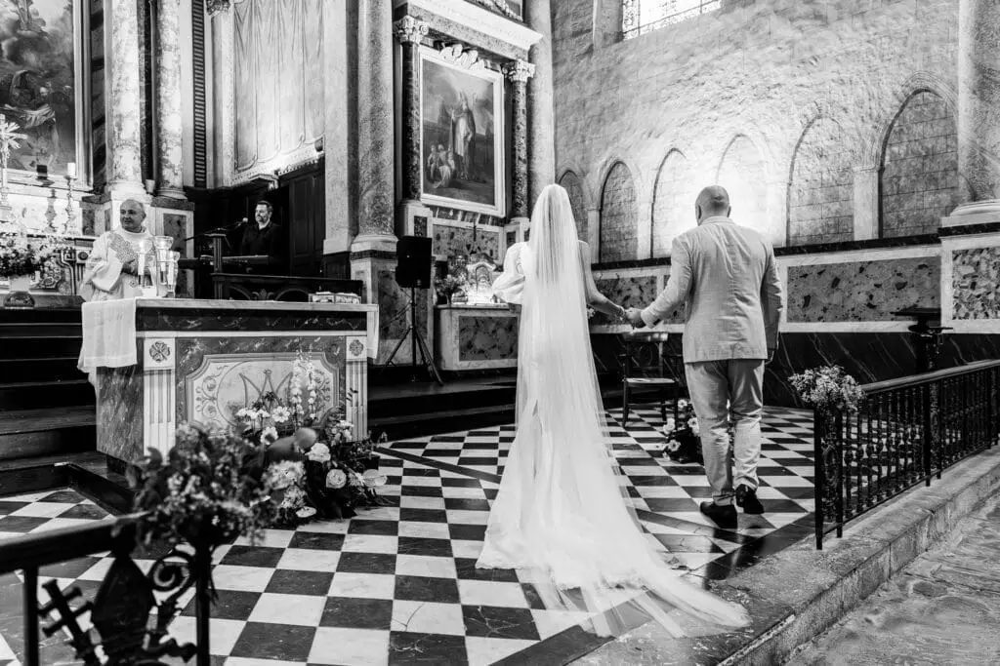


Yvonne & Thomas
En septembre 2025, Yvonne & Thomas, couple franco-allemand, ont traversé la France pour célébrer leur union au Château Belle Époque, dans les Landes. Pensé comme une…
Lire leur histoire
Chloé & Romain
On ne se lasse pas de revivre ce mariage haut en couleurs à la @lafermedenchon ! Une journée aussi pétillante qu’élégante, portée par une robe voluptueuse, une…
Lire leur histoire